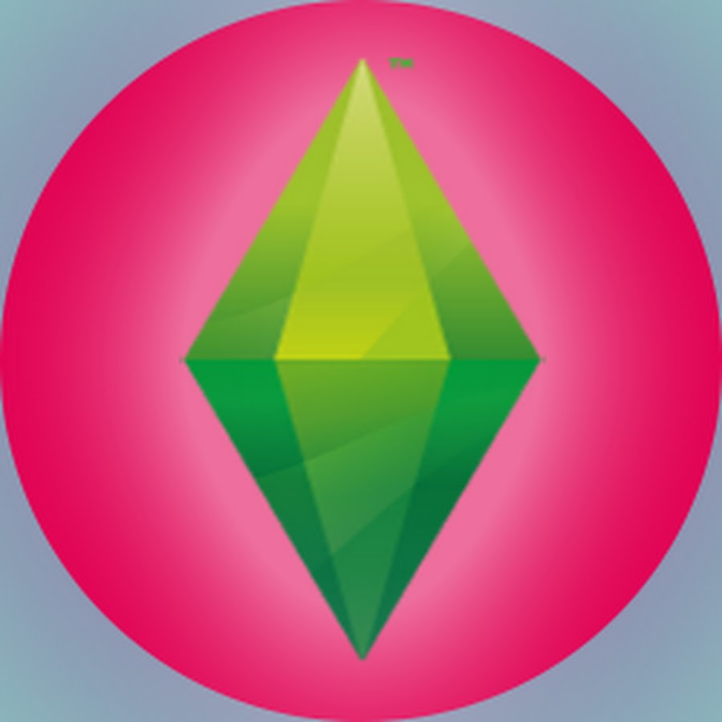

Мои компетенции
Visual Studio Code

C#
Adobe Illustrator

Adobe Photoshop

Sims
Witcher
Sims
Witcher
Но вообще коты умеют всё!!!
Услуги кота
- Написание кода на разных языках программирования, в том числе и на CatLub
- Создание картинок и логотипов для котов и в виде котов
- Жмякание по кнопкам на клавиатуре
- Фигурное лежание в неудобных позах
- Прохождение игр в темноте
Необычные способности
1. Высокая скоростьНекоторые кошечки способны развивать скорость жмяков лапками вплоть до 48 км/ч. Сильные лапки не устают даже при долгом сидении за компьютером.